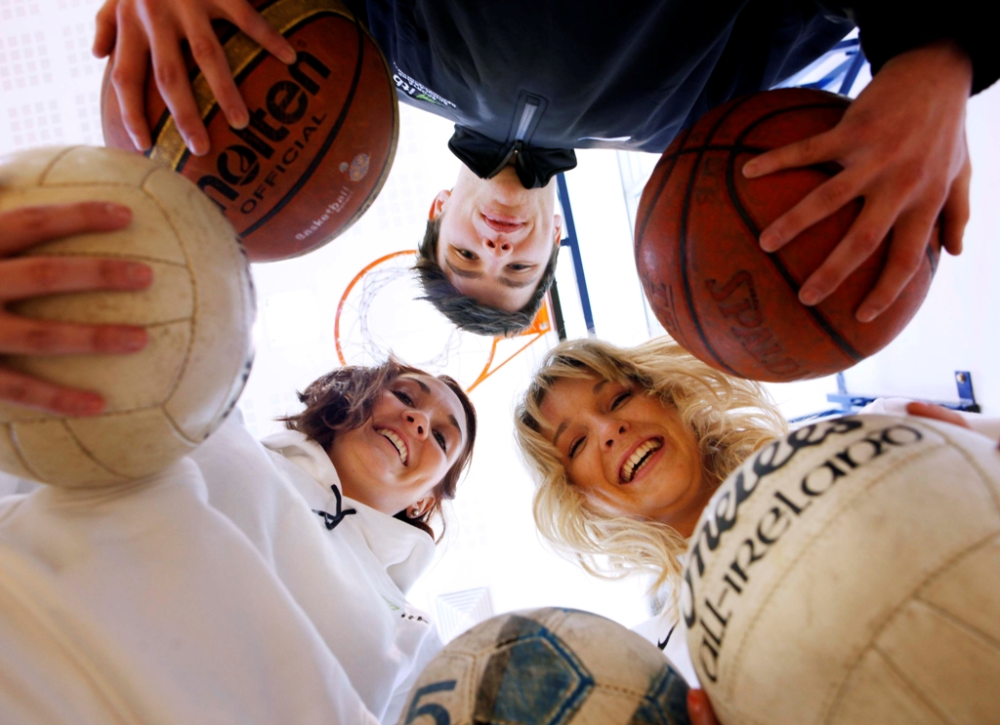
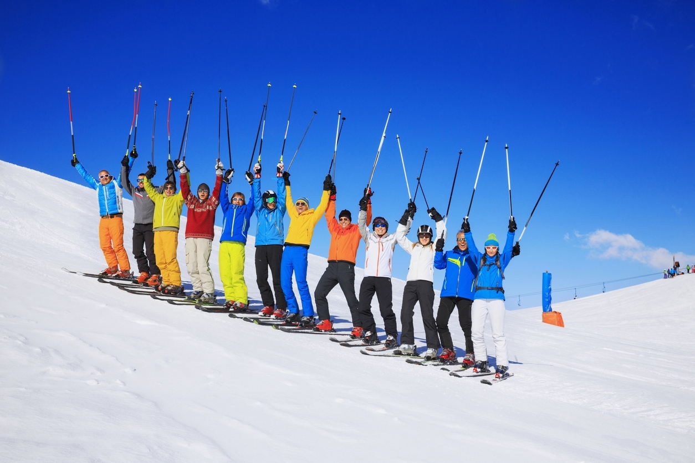
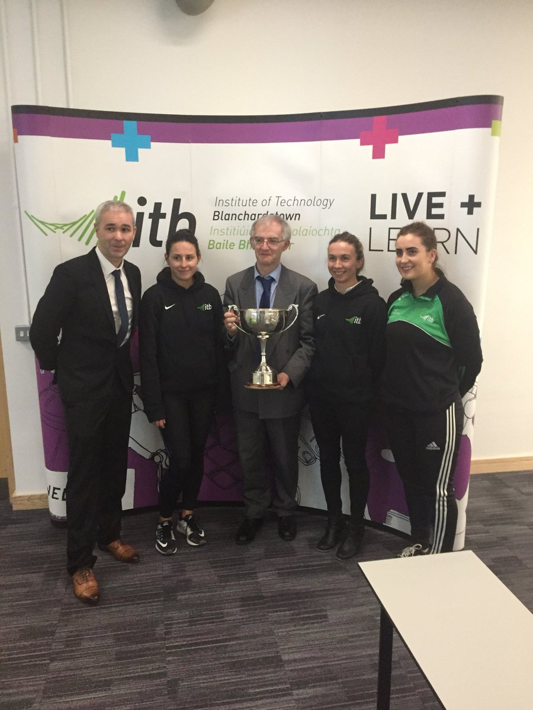

Institute of Technology Blanchardstown
ITB has always been very heavily influenced by students, and over the years facilitated the needs and wants of those students. Clubs & Societies are one of the biggest activities for any student to get invloved in. Over the years ITB's clubs and socs list has grow and grow!

Clubs
The first sporting club was founded in ITB in 1999. ITB Sports clubs include GAA, Ultimate, Soccer, Futsal, Pool, Basketball, Swimming, Athletics, Martial Arts, Rugby, Badminton, Boxing, Golf, Ski and Olympic Handball. Many of these clubs compete at the inter varsity level and have won numerous awards. ITB's list of clubs now range from the Harry Potter Society to the Colours LGBTQI+* Society.

Trips
Many of the Clubs and Socs have travelled to other countries or counties to partake in competitions or avail of their facilitaties. The Badminton team reached the finals which were held in Belfast last year. Students travel to a ski resort around January / February where they receive ski lessons for those who need it. Places the college has travelled to before include Andorra.

Accomplishments
Many of ITB's Clubs have won awards or competitions. Such as, the Men's Senior football team winning the Trench Cup in 2013, the Ladies GAA team being crowned Lagan Cup Champions in 2012. PhotoSoc is one of the largest societies in ITB Winning Society of the year 2010. The Gold Society team won the shield event in Carton House in 2017.